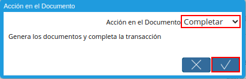

3.2.1. Registo de Inventario de Uso Interno¶
Para ejemplificar el inventario de uso interno, es generado el reporte “Detalle de Almacenamiento” del producto “LIBRETA GULF MCLAREN (ANARANJADA)” en el almacén “Comercialización”, el mismo es visualizado de la siguiente manera.
Imagen 1. Detalle de Almacenamiento antes del Movimiento
Ubique y seleccione en el menú de ADempiere, la carpeta “Gestión de Materiales”, luego seleccione la ventana “Inventario Uso Interno”.
Imagen 2. Menú de ADempiere
Podrá visualizar la ventana “Inventario Uso Interno” donde se encuentran los registros de los diferentes inventarios realizados para el uso interno de la organización.
Imagen 3. Ventana Inventario de Uso Interno
Seleccione el icono “Registro Nuevo”, ubicado en la barra de herramientas de ADempiere para crear un nuevo registro de inventario de uso interno.
Imagen 4. Icono Registro Nuevo
Seleccione en el campo “Organización”, la organización para la cual esta realizando el inventario de uso interno.
Imagen 5. Campo Organización
Note
El valor en el campo “No. del Documento”, lo predetermina ADempiere con un código compuesto por las iniciales del “Tipo de Documento” y la cantidad de documentos registrados bajo el “Tipo de Documento” seleccionado.
Seleccione el tipo de documento a generar en el campo “Tipo de Documento”, la selección de este define el comportamiento del documento que se esta elaborando, dicho comportamiento se encuentra explicado en el documento Tipo de Documento elaborado por la empresa ERPyA.
Imagen 6. Campo Tipo de Documento
Introduzca en el campo “Fecha de Movimiento”, la fecha en la cual es realizado el inventario de uso interno.
Imagen 7. Campo Fecha de Movimiento
Seleccione en el campo “Almacén”, el almacén de la organización en el cual se encuentra localizado el producto.
Imagen 8. Campo Almacén
Introduzca en el campo “Descripción”, una breve descripción referente al inventario que se esta realizando.
Imagen 9. Campo Descripción

Seleccione la pestaña “Línea Inventario, Uso Interno” y proceda al llenado de los campos correspondientes.
Imagen 10. Pestaña Línea de Inventario Uso Interno
Seleccione en el campo “Producto”, el producto involucrado en el inventario de uso interno que esta realizando. Para ejemplificar el registro es utilizado el producto “LIBRETA GULF MCLAREN (ANARANJADA)”.
Imagen 11. Campo Producto
Seleccione en el campo “Ubicación”, el lugar exacto donde será localizado el producto.
Imagen 12. Campo Ubicación
Introduzca en el campo “Cantidad Usada Internamente”, la cantidad que es utilizada internamente por el departamento de la organización que esta realizando el inventario de uso interno.
Imagen 13. Campo Cantidad Usada Internamente
Seleccione en el campo “Cargo”, el cargo correspondiente al movimiento de material que esta realizando. Para ejemplificar el registro es utilizado el cargo “Insumos de Oficina”.
Imagen 14. Campo Cargo
Introduzca en el campo “Descripción”, una breve descripción referente a la línea del inventario que se encuentra realizando.
Imagen 15. Campo Descripción
Seleccione la pestaña principal “Inventario Uso Interno”, para luego seleccionar la opción “Procesar Conteo Físico”, que se desplega al seleccionar el icono “Proceso”, ubicado en la barra de herramientas de ADempiere.
Imagen 16. Pestaña Inventario de Uso Interno
Podrá visualizar la ventana de acción del proceso, donde debe seleccionar la acción “Completar” y la opción “OK” para completar el documento.

Imagen 17. Acción Completar y Opción OK
Note
Al completar el registro, se selecciona de manera automática el check “Procesado”.
3.2.2. Consultar Detalle de Almacenamiento¶
Al generar el reporte “Detalle de Almacenamiento” del producto “LIBRETA GULF MCLAREN (ANARANJADA)” en el almacén “Comercialización” luego del proceso “Inventario de Uso Interno”, se puede visualizar el mismo de la siguiente manera.
Imagen 18. Detalle de Almacenamiento después del Movimiento